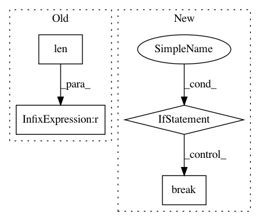

4588ac6d2704f69dd9f527ae8145cd820c44667d,enjoy.py,,,#,13
Before Change
torch.load(os.path.join(args.load_dir, args.env_name + ".pt"))
if len(env.observation_space.shape) == 1:
env = VecNormalize(env, ret=False)
env.ob_rms = ob_rms
// An ugly hack to remove updates
After Change
render_func = None
tmp_env = env
while True:
if hasattr(tmp_env, "envs"):
render_func = tmp_env.envs[0].render
break
elif hasattr(tmp_env, "venv"):
tmp_env = tmp_env.venv
elif hasattr(tmp_env, "env"):
tmp_env = tmp_env.env
else:
break
// We need to use the same statistics for normalization as used in training
actor_critic, ob_rms = \
torch.load(os.path.join(args.load_dir, args.env_name + ".pt"))
if isinstance(env.venv, VecNormalize):
In pattern: SUPERPATTERN
Frequency: 3
Non-data size: 4
Instances
Project Name: ikostrikov/pytorch-a2c-ppo-acktr
Commit Name: 4588ac6d2704f69dd9f527ae8145cd820c44667d
Time: 2018-09-04
Author: ikostrikov@gmail.com
File Name: enjoy.py
Class Name:
Method Name:
Project Name: biocore/scikit-bio
Commit Name: daf661c3edd949f8ac2cd70e4a725d9a055cc0c3
Time: 2016-06-27
Author: mcdonadt@colorado.edu
File Name: skbio/tree/_tree.py
Class Name: TreeNode
Method Name: shear
Project Name: ina-foss/inaSpeechSegmenter
Commit Name: 4396573e860d553825702006aa335989356b45c8
Time: 2020-05-10
Author: ddoukhan@ina.fr
File Name: inaSpeechSegmenter/segmenter.py
Class Name:
Method Name: featGenerator